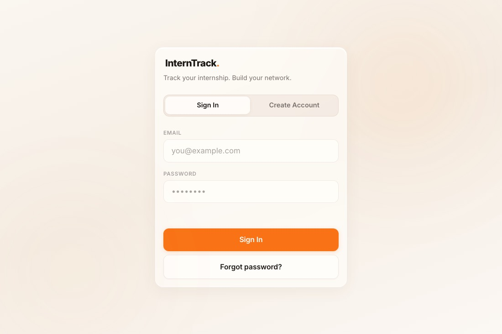

Internship Tracker

I built this because I was the problem it solves. Every Friday I would try to reconstruct a week of work from memory for my manager, and every Friday I would leave something out. So: log tasks and wins as they happen, and the app assembles the weekly update for you. It also holds everyone you meet, because networking notes scattered across three apps are functionally the same as no notes.
What it taught me
Scope. The first version wanted to be a CRM, a journal, and a goal tracker at once. The version that shipped does three things and is the only one I actually use.